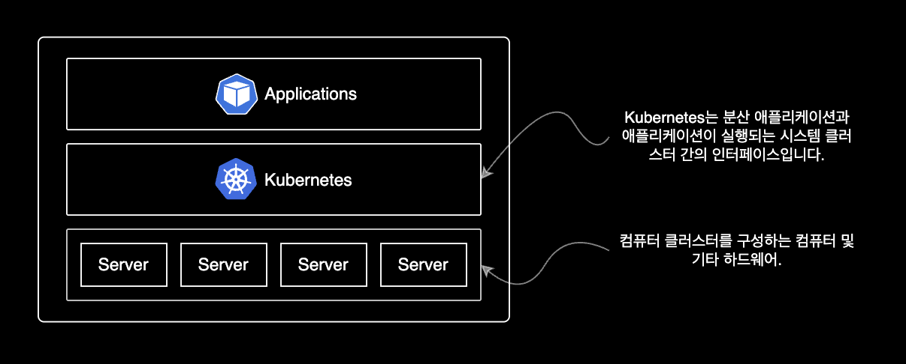
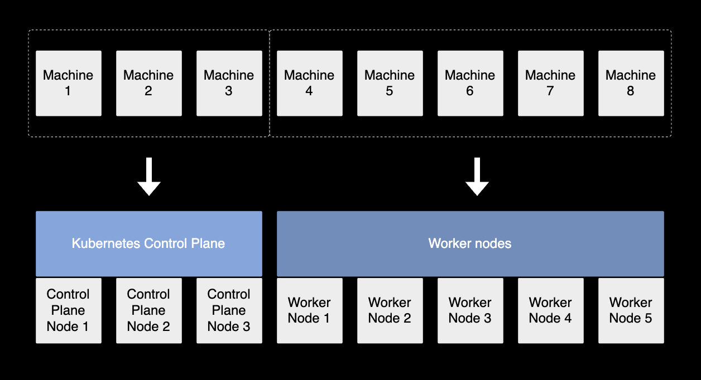
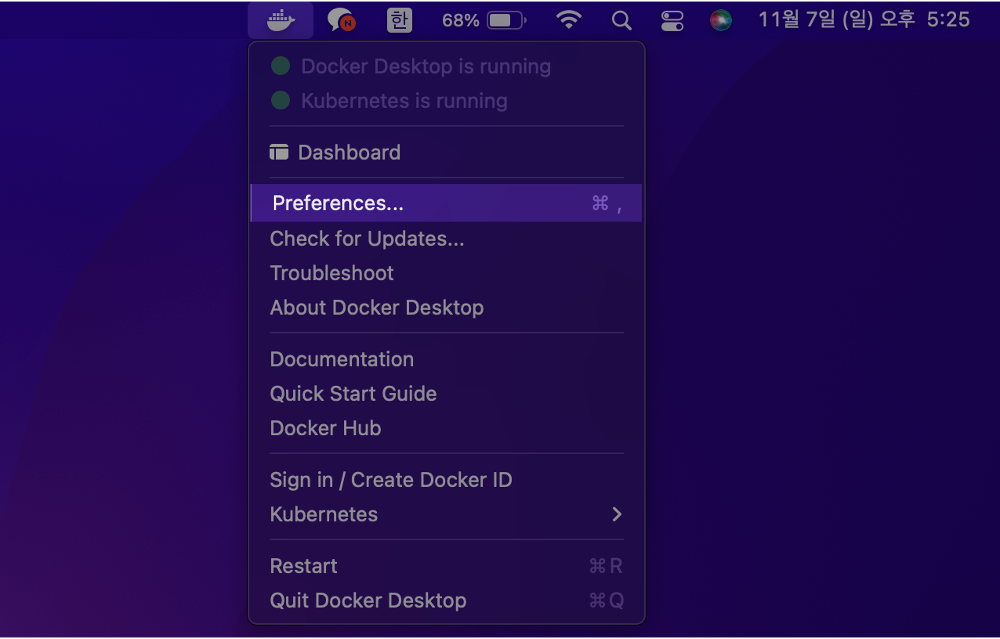

Kubernetes 설치
개요
macOS 로컬환경에서 Kubernetes 실습을 할 수 있도록 쿠버네티스 설치 과정을 설명합니다.
배경지식
Kubernetes
쿠버네티스 개요
쿠버네티스는 수백 대, 수천 대의 컨테이너를 쉽고 빠르게 배포/확장하고 관리를 자동화해주는 오픈소스 플랫폼입니다.

컴퓨터 클러스터를 구성하고 관리하는 오픈소스 플랫폼인 쿠버네티스는 클러스터에 대한 운영 체제Operating System와 같은 역할을 수행합니다.
쿠버네티스 클러스터의 구성
쿠버네티스가 컴퓨터 클러스터에 어떻게 배포, 구성되는 지 구체적인 예시가 궁금하다면 다음 그림을 참고합니다.

하나의 쿠버네티스 클러스터는 여러 대의 머신으로 구성됩니다. 클러스터를 구성하는 전체 머신은 크게 2개 그룹으로 나눌 수 있습니다.
- Control Plane : Control Plane은 Control Plane Nodes에서 실행됩니다. Control Plane은 클러스터의 두뇌와 같으며 전체적인 쿠버네티스 시스템을 제어합니다.
- Worker Nodes : Control Plane 외에 나머지 노드들은 모두 Worker Node라고 불리며 어플리케이션(파드)은 Worker Node에서 실행됩니다.
환경
- Hardware : MacBook Pro (13", M1, 2020)
- OS : macOS Monterey 12.0.1
- 패키지 관리자 : Homebrew 3.3.2
- Docker Desktop 4.1.1
- 클러스터 구성 : minikube
- 노드의 쿠버네티스 버전은 Kubernetes v1.21.5
- 클러스터는 2대의 노드로 구성
준비사항
로컬 환경
homebrew 설치 방법은 이 글의 주제를 벗어나기 때문에 자세한 설명을 생략합니다.
클러스터 셋업
Docker 설치
쿠버네티스 클러스터를 생성하기 위해서는 docker 설치가 먼저 필요합니다.
macOS용 패키지 관리자인 Homebrew를 이용해 docker를 설치합니다.
$ brew install --cask docker
==> Downloading https://desktop.docker.com/mac/main/arm64/69879/Docker.dmg
Already downloaded: /Users/ive/Library/Caches/Homebrew/downloads/b5774f18ca8a6d3936c5174f91b93cb1a1a407daa784fe63d9b6300180c7b1ed--Docker.dmg
==> Installing Cask docker
==> Moving App 'Docker.app' to '/Applications/Docker.app'
==> Linking Binary 'docker-compose.bash-completion' to '/opt/homebrew/etc/bash_c
==> Linking Binary 'docker.zsh-completion' to '/opt/homebrew/share/zsh/site-func
==> Linking Binary 'docker.fish-completion' to '/opt/homebrew/share/fish/vendor_
==> Linking Binary 'docker-compose.fish-completion' to '/opt/homebrew/share/fish
==> Linking Binary 'docker-compose.zsh-completion' to '/opt/homebrew/share/zsh/s
==> Linking Binary 'docker.bash-completion' to '/opt/homebrew/etc/bash_completio
🍺 docker was successfully installed!
docker 최초 설치 시 오래 걸립니다.
인내심을 갖고 기다립니다.
brew로 설치한 패키지 목록을 확인합니다.
$ brew list --cask
docker iterm2
cask 목록에 docker가 추가되었습니다.
곧 런치패드에도 Docker 아이콘이 추가됩니다.

kubernetes 활성화
도커가 정상 설치되었다면 상단바에 Docker Desktop 아이콘이 나타납니다.
이제 도커 데스크탑에서 쿠버네티스 기능을 활성화합니다.

상단바 Docker 아이콘 클릭 → 환경설정(Preferences) 클릭

Kubernetes → Enable Kubernetes 체크 → Apply & Restart
클러스터 생성
minikube를 사용해서 로컬 쿠버네티스 클러스터를 생성합니다.
$ minikube start \
--driver='docker' \
--kubernetes-version='stable' \
--nodes=2
--nodes=<NODE_NUMBER> 옵션을 사용해서 쿠버네티스 클러스터를 구성하는 노드 수를 지정할 수 있습니다.
kubernetes 상태 확인
minikube 클러스터의 컨트롤 플레인이 쿠버네티스 클러스터 정보를 제대로 응답하는지 확인합니다.
$ kubectl cluster-info
Kubernetes control plane is running at https://kubernetes.docker.internal:6443
CoreDNS is running at https://kubernetes.docker.internal:6443/api/v1/namespaces/kube-system/services/kube-dns:dns/proxy
To further debug and diagnose cluster problems, use 'kubectl cluster-info dump'.
쿠버네티스 API 서버가 minikube 클러스터 정보를 정상적으로 응답했습니다.
kubectl 버전 확인
kubectl은 쿠버네티스 클러스터에게 명령을 내리고 관리하기 위한 CLI 도구입니다.
로컬에 설치된 kubectl 버전을 확인합니다.
예상하지 못한 실행결과와 버그를 방지하기 위해 클러스터의 쿠버네티스 버전과 kubectl 버전을 일치시켜 사용하는 것을 권장합니다.
$ kubectl version
Client Version: version.Info{Major:"1", Minor:"22", GitVersion:"v1.22.3", GitCommit:"c92036820499fedefec0f847e2054d824aea6cd1", GitTreeState:"clean", BuildDate:"2021-10-27T18:34:20Z", GoVersion:"go1.16.10", Compiler:"gc", Platform:"darwin/arm64"}
Server Version: version.Info{Major:"1", Minor:"21", GitVersion:"v1.21.5", GitCommit:"aea7bbadd2fc0cd689de94a54e5b7b758869d691", GitTreeState:"clean", BuildDate:"2021-09-15T21:04:16Z", GoVersion:"go1.16.8", Compiler:"gc", Platform:"linux/arm64"}
kubectl 명령어가 문제없이 동작하는 걸 확인할 수 있습니다.
이제 쿠버네티스 클러스터 구성이 끝났습니다.
쿠버네티스 실습
1. pod 스펙 작성
kubernetes에서 오브젝트를 생성하려면 오브젝트에 대한 기본적인 정보와 함께 의도한 상태를 기술한 오브젝트 스펙Spec을 제시해야합니다.
쿠버네티스 오브젝트를 생성하기 위한 언어는 크게 YAML과 JSON으로 나뉩니다.
대부분의 경우 YAML이 JSON보다 가독성이 좋고 작성하기도 쉬워서 많이들 사용합니다.
쿠버네티스 구성요소의 최소 단위를 파드Pod라고 부릅니다. 도커에서는 컨테이너를 사용하지만요.
1개의 파드는 1개 이상의 컨테이너로 구성됩니다.
아래는 파드 매니페스트를 생성하는 명령어입니다.
myapp-pod라는 이름의 파드 1개를 생성하는 내용입니다.
$ cat << EOF > sample-pod.yaml
---
apiVersion: v1
kind: Pod
metadata:
name: myapp-pod # 파드 이름
labels:
app: myapp
spec:
containers:
- name: myapp-container # 컨테이너 이름
image: busybox # 컨테이너 이미지
# 컨테이너가 실행할 명령어
command: ['sh', '-c', 'echo Hello Kubernetes! && sleep 3600']
EOF
myapp-pod라는 이름을 가진 파드 안에는 1개의 컨테이너가 포함되어 있습니다.
해당 컨테이너의 이름은 myapp-container이며 최신 버전의 busybox 이미지를 사용해서 컨테이너를 생성합니다.
2. pod 배포
작성한 sample-pod.yaml 파일을 사용해서 파드를 생성합니다.
$ kubectl apply -f sample-pod.yaml
pod/myapp-pod created
실행 결과로 pod/myapp-pod created 메세지가 출력되면 pod가 정상 생성된 것입니다.
3. pod 상태확인
파드 정보를 확인합니다.
$ kubectl get pods
NAME READY STATUS RESTARTS AGE
myapp-pod 0/1 ContainerCreating 0 3s
파드의 STATUS를 확인합니다.
현재 파드가 생성중ContainerCreating인 상태입니다.
몇 초 후에 파드 목록을 다시 조회합니다.
$ kubectl get pods
NAME READY STATUS RESTARTS AGE
myapp-pod 1/1 Running 0 5s
이제 파드가 생성 완료된 후 실행중Running입니다.
축약어
$ kubectl get po
pods 키워드 대신 축약형인 po를 입력해도 됩니다.
파드 외에 대부분의 쿠버네티스 리소스, 오브젝트들에도 축약형이 지정되어 있습니다.
예를 들어 namespace는 ns, deployments는 deploy, replicasets는 rs입니다.
CLI 환경에서는 한 글자라도 덜 치는게 편하게 일하는 지름길입니다.
파드 정보 자세히 출력
파드 리스트를 조회합니다.
$ kubectl get pods -o wide
NAME READY STATUS RESTARTS AGE IP NODE NOMINATED NODE READINESS GATES
myapp-pod 1/1 Running 0 11s 10.1.0.8 docker-desktop <none> <none>
-o wide 옵션을 사용하면 IP, NODE, NOMINATED NODE, READINESS GATES 4가지 정보를 더 보여줍니다.
4. 배포 결과확인
특정 파드의 로그를 확인합니다.
$ kubectl logs pod/myapp-pod
Hello Kubernetes!
sample-pod.yaml 파일에 작성한대로 파드가 echo Hello Kubernetes! 메세지를 출력했습니다.
5. pod 접속
myapp-pod 파드의 myapp-container 컨테이너 안으로 접속합니다.
deprecated 명령어
구 버전의 kubernetes에서는 pod 접속시 kubectl exec -it [POD] [COMMAND] 명령어를 사용했습니다.
$ kubectl exec -it myapp-pod /bin/sh -c myapp-container
하지만 해당 명령어는 신규 명령어로 대체되어 곧 다음 버전에서 사라질deprecated 예정입니다.
과거 방식의 접속 명령어를 사용하면 아래와 같은 경고문이 출력됩니다.
친절하게도 올바른 새 버전의 명령어를 안내해주기까지 하네요.
kubectl exec [POD] [COMMAND] is DEPRECATED and will be removed in a future version. Use kubectl exec [POD] -- [COMMAND] instead.
파드 접속 명령어를 사용할 때 이 점을 꼭 기억합니다.
명령어 형식
kubernetes 권고사항에 따라 아래의 신규 kubectl exec 명령어를 사용해서 컨테이너에 접속합니다.
$ kubectl exec <POD_NAME> -c <CONTAINER_NAME> -it -- <COMMAND>
실제 명령어
myapp-pod 파드의 myapp-container 컨테이너로 접속합니다.
$ kubectl exec myapp-pod \
-c myapp-container \
-it \
-- /bin/sh
/bin/sh을 이용해서 myapp-pod의 myapp-container에 접속합니다.
$ kubectl exec myapp-pod \
-c myapp-container \
-it \
-- /bin/sh
컨테이너에 접속되면 프롬프트가 컨테이너 환경에 맞게 변경됩니다.
컨테이너의 shell 환경에 진입한 상태입니다.
/ # hostname
myapp-pod
/ # ifconfig
eth0 Link encap:Ethernet HWaddr 5E:DC:25:DF:28:AA
inet addr:10.1.0.9 Bcast:10.1.255.255 Mask:255.255.0.0
UP BROADCAST RUNNING MULTICAST MTU:1500 Metric:1
RX packets:14 errors:0 dropped:0 overruns:0 frame:0
TX packets:1 errors:0 dropped:0 overruns:0 carrier:0
collisions:0 txqueuelen:0
RX bytes:1048 (1.0 KiB) TX bytes:42 (42.0 B)
lo Link encap:Local Loopback
inet addr:127.0.0.1 Mask:255.0.0.0
UP LOOPBACK RUNNING MTU:65536 Metric:1
RX packets:0 errors:0 dropped:0 overruns:0 frame:0
TX packets:0 errors:0 dropped:0 overruns:0 carrier:0
collisions:0 txqueuelen:1000
RX bytes:0 (0.0 B) TX bytes:0 (0.0 B)
컨테이너 상태 확인이 끝났습니다.
컨테이너 안에서 Escape Sequence인 Ctrl + p, q 키를 입력하면 컨테이너 쉘에서 빠져나올 수 있습니다.
exec attach failed: error on attach stdin: read escape sequence
command terminated with exit code 126
$
6. 파드 삭제
이전에 작성한 .yaml 파일을 사용해서 생성한 파드를 삭제합니다.
$ kubectl delete -f sample-pod.yaml
pod "myapp-pod" deleted
kubectl delete pod 명령어를 이용해 파드를 지정해 삭제를 할수도 있지만, 깔끔한 삭제를 위해서는 -f 옵션을 이용해 yaml 파일에 선언된 설정을 기반으로 삭제하는 걸 권장합니다.
파드 삭제까지 약 20초 정도 걸립니다.
파드 목록을 조회합니다.
$ kubectl get po
No resources found in default namespace.
default 네임스페이스에서 파드가 없다고 나옵니다.
파드 삭제가 완료되었습니다.
7. 실습환경 정리
실습이 끝났으니 minikube 클러스터를 완전 삭제합니다.
$ minikube delete
minikube 클러스터의 상태를 확인합니다.
$ minikube status
🤷 Profile "minikube" not found. Run "minikube profile list" to view all profiles.
👉 To start a cluster, run: "minikube start"
클러스터가 삭제되었기 때문에 minikube 클러스터의 상태 정보가 조회되지 않습니다.
마치며
지금까지 minikube를 활용해서 간단한 쿠버네티스 실습을 해보았습니다.
이상 실습을 마치겠습니다.